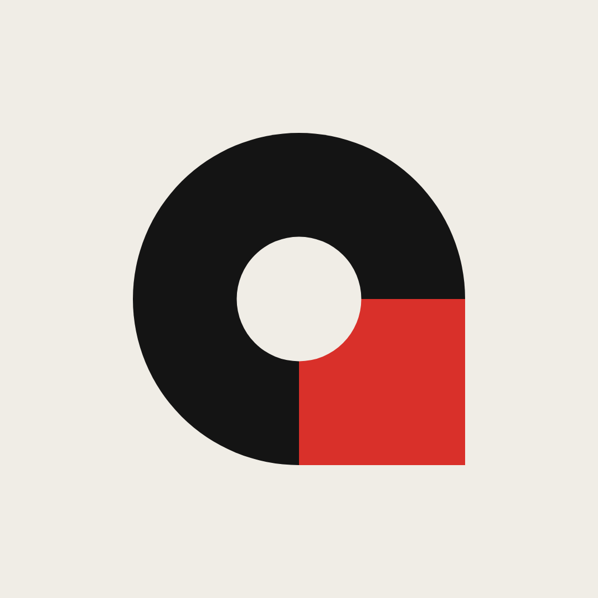
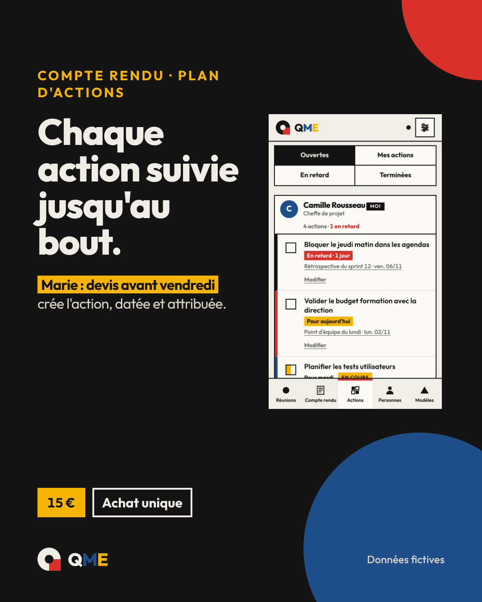
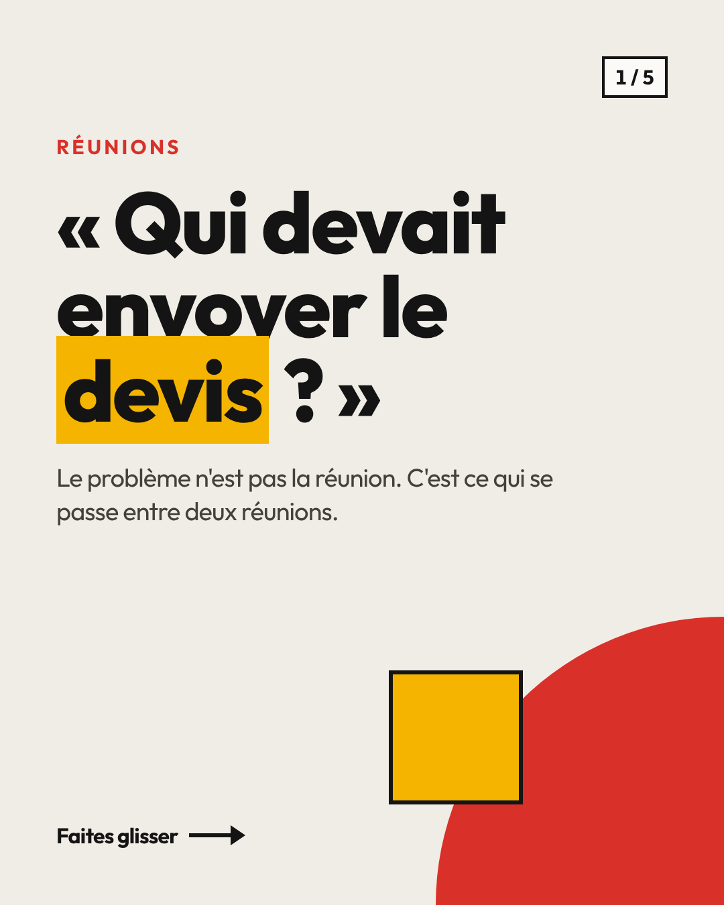
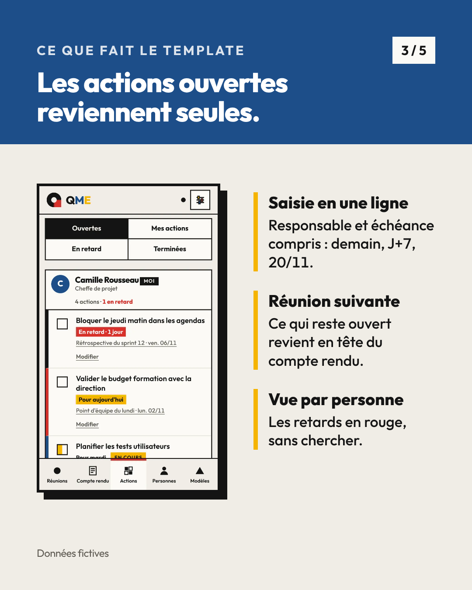
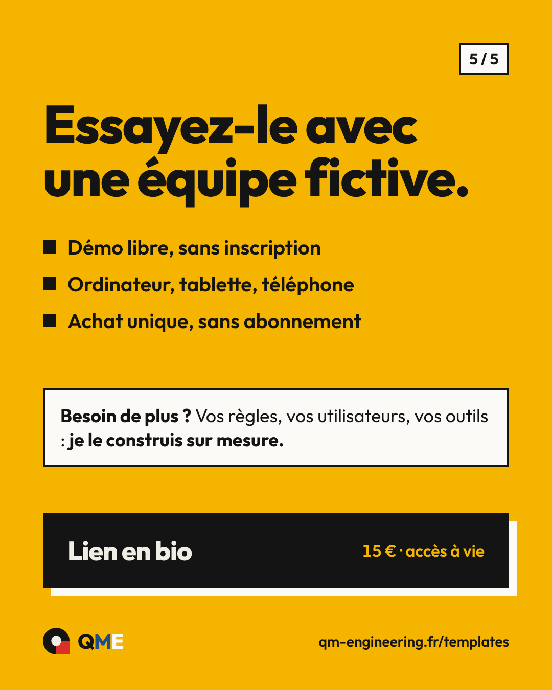
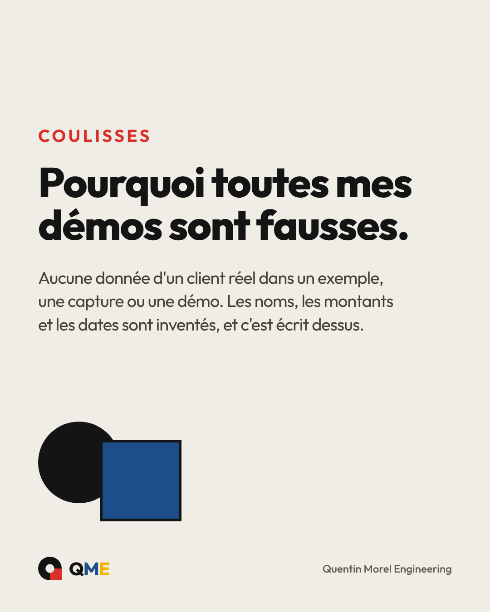
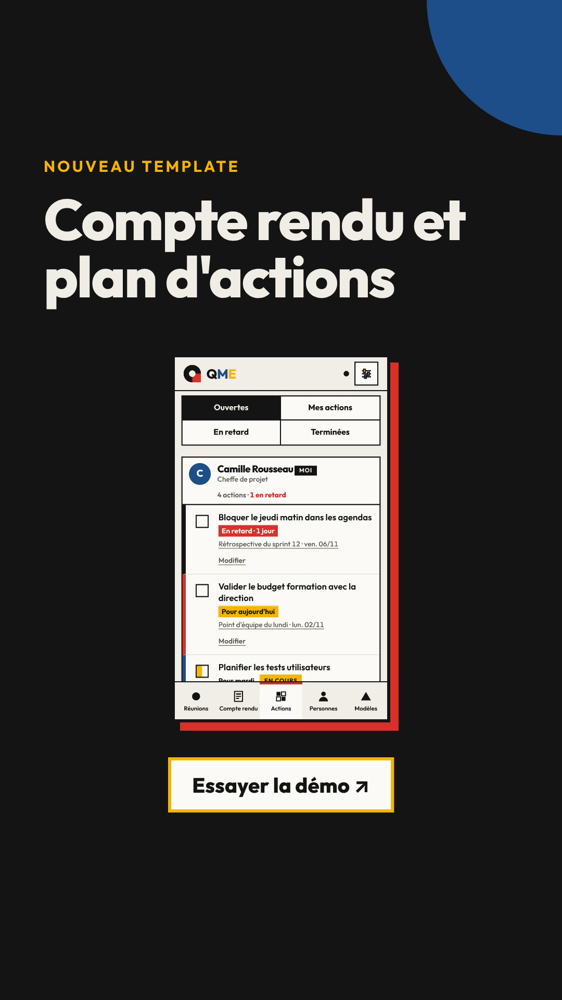
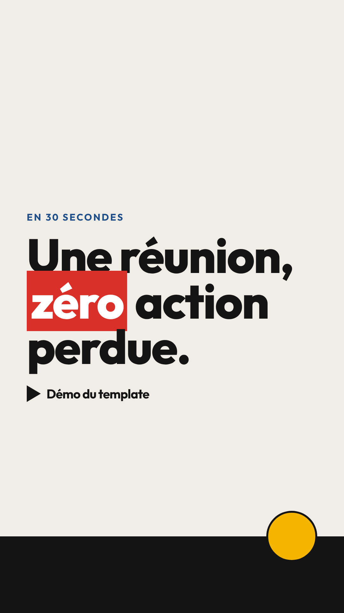

<title>Kit Instagram QME</title>
<meta name="claude:viewport-fit-sides" content="cover">
<link rel="stylesheet" href="https://fonts.googleapis.com/css2?family=Outfit:wght@400;500;600;700;800&display=swap">
<style>
/* Mise en page : colonne de 1080 px max, sections séparées par des filets encre de 2 px, comme le site QME.
   Look unique assumé (papier et encre de la charte), donc pas de thème sombre. */
:root{
  color-scheme:light;
  --papier:#F0EDE6;--surface:#FBFAF6;--encre:#141414;--texte-2:#45413A;--discret:#5E5A52;--trait:#D9D4C8;
  --rouge:#D9302A;--jaune:#F5B400;--bleu:#1D4E89;--blanc:#FFFFFF;
  --titre:'Outfit',system-ui,sans-serif;--corps:'Outfit',system-ui,sans-serif;
}
*{box-sizing:border-box}
body{background:var(--papier);color:var(--encre);font:400 17px/1.55 var(--corps);font-variant-numeric:tabular-nums;overflow-x:clip}
h1,h2,h3,p{margin:0}
h1,h2,h3{font-family:var(--titre);font-weight:800;letter-spacing:-.025em;line-height:1.05;text-wrap:balance}
.bande{border-bottom:2px solid var(--encre);padding-left:max(16px,env(safe-area-inset-left,0px));padding-right:max(16px,env(safe-area-inset-right,0px))}
.int{max-width:1080px;margin:0 auto;padding-block:56px;display:flex;flex-direction:column;gap:28px}
.sourcil{font-size:13px;font-weight:700;letter-spacing:.14em;text-transform:uppercase;color:var(--texte-2)}
h2{font-size:clamp(30px,4vw,44px)}
.chapo{color:var(--texte-2);max-width:66ch}
code{font-size:.9em;background:var(--surface);border:1px solid var(--trait);padding:1px 5px}
mark{background:var(--jaune);color:var(--encre);padding:0 5px}

/* En-tête */
.tete .int{display:grid;grid-template-columns:1fr auto;gap:32px;align-items:center;padding-block:48px}
.tete h1{font-size:clamp(44px,7vw,84px)}
.tete h1 .m{color:var(--bleu)}.tete h1 .e{color:var(--jaune);-webkit-text-stroke:0}
.tete .chapo{margin-top:16px;font-size:19px}
.tete svg{width:132px;height:132px}
@media (max-width:640px){.tete .int{grid-template-columns:1fr}.tete svg{width:84px;height:84px;order:-1}}

/* Profil */
.profil{display:grid;grid-template-columns:minmax(0,400px) minmax(0,1fr);gap:40px;align-items:start}
@media (max-width:860px){.profil{grid-template-columns:1fr}}
.ecran{background:var(--blanc);border:2px solid var(--encre);box-shadow:8px 8px 0 var(--encre);padding:18px 0 0;max-width:400px;width:100%}
.ecran .ligne{display:flex;align-items:center;gap:18px;padding:0 16px}
.ecran .av{width:86px;height:86px;border-radius:50%;overflow:hidden;flex:none;border:1px solid var(--trait)}
.ecran .av img{width:100%;height:100%;display:block}
.ecran .pseudo{font-weight:700;font-size:18px}
.ecran .chiffres{display:flex;gap:16px;font-size:13px;color:var(--discret);margin-top:4px}
.ecran .bio{padding:12px 16px 0;font-size:14px;line-height:1.4;white-space:pre-line}
.ecran .bio b{display:block;font-weight:700}
.ecran .bio .cat{color:var(--discret)}
.ecran .bio .lien{color:#00376B;font-weight:600}
.une{display:flex;gap:12px;padding:16px;overflow-x:auto}
.une figure{margin:0;display:flex;flex-direction:column;align-items:center;gap:5px;flex:none;width:62px}
.une .r{width:62px;height:62px;border-radius:50%;border:1px solid var(--trait);padding:2px;background:var(--blanc)}
.une .r span{display:block;width:100%;height:100%;border-radius:50%;background-size:180%;background-position:center}
.une figcaption{font-size:11px;white-space:nowrap}
.grille{display:grid;grid-template-columns:repeat(3,1fr);gap:2px;border-top:1px solid var(--trait)}
.grille div{aspect-ratio:3/4;background-size:cover;background-position:center}
.champs{display:flex;flex-direction:column;gap:14px;min-width:0}
.champ{background:var(--surface);border:2px solid var(--encre);padding:14px 16px;display:grid;grid-template-columns:150px minmax(0,1fr) auto;gap:6px 14px;align-items:start}
.champ .k{font-size:13px;font-weight:700;letter-spacing:.06em;text-transform:uppercase;color:var(--texte-2);padding-top:3px}
.champ .v{white-space:pre-line;min-width:0;overflow-wrap:anywhere}
.champ .n{grid-column:2/4;font-size:13px;color:var(--discret)}
@media (max-width:560px){.champ{grid-template-columns:minmax(0,1fr) auto}.champ .k{grid-column:1/3}.champ .n{grid-column:1/3}}
button.copier{font:700 14px/1 var(--corps);min-height:36px;padding:0 12px;border:2px solid var(--encre);background:var(--surface);color:var(--encre);cursor:pointer}
button.copier:hover{background:var(--jaune)}
button.copier:focus-visible{outline:3px solid var(--bleu);outline-offset:2px}
.etapes{margin:0;padding-left:22px;display:flex;flex-direction:column;gap:6px;color:var(--texte-2)}

/* Charte */
.nuancier{display:grid;grid-template-columns:repeat(auto-fit,minmax(150px,1fr));gap:14px}
.nuance{border:2px solid var(--encre);background:var(--surface);display:flex;flex-direction:column}
.nuance .pl{height:84px;border-bottom:2px solid var(--encre);display:flex;align-items:flex-end;padding:8px 10px;font-weight:800;font-size:22px}
.nuance .tx{padding:10px;font-size:14px;line-height:1.4}
.nuance code{background:none;border:0;padding:0}
.typo{display:grid;grid-template-columns:repeat(auto-fit,minmax(260px,1fr));gap:14px}
.typo div{border:2px solid var(--encre);background:var(--surface);padding:18px}
.typo .a{font-size:52px;font-weight:800;letter-spacing:-.025em;line-height:1}
.typo .b{font-size:14px;font-weight:700;letter-spacing:.14em;text-transform:uppercase;color:var(--rouge)}
.typo .c{font-size:17px;color:var(--texte-2)}
.typo small{display:block;margin-top:10px;color:var(--discret);font-size:13px}

/* Formats */
.formats{display:grid;grid-template-columns:repeat(auto-fill,minmax(210px,1fr));gap:20px}
.formats figure{margin:0;display:flex;flex-direction:column;gap:10px;min-width:0}
.formats img{width:100%;border:2px solid var(--encre);display:block;background:var(--surface)}
.formats figcaption{font-size:14px;line-height:1.4;color:var(--texte-2)}
.formats figcaption b{display:block;color:var(--encre);font-size:15px}
.regles{display:grid;grid-template-columns:repeat(auto-fit,minmax(250px,1fr));gap:14px}
.regle{border-left:6px solid var(--bleu);background:var(--surface);padding:12px 16px;font-size:15px}
.regle b{display:block}

/* Rédaction */
.deux{display:grid;grid-template-columns:repeat(auto-fit,minmax(300px,1fr));gap:24px}
.liste{margin:0;padding:0;list-style:none;display:flex;flex-direction:column;gap:10px}
.liste li{display:grid;grid-template-columns:14px 1fr;gap:12px;align-items:baseline}
.liste li::before{content:"";width:12px;height:12px;background:var(--encre);transform:translateY(1px)}
.exemple{background:var(--blanc);border:2px solid var(--encre);padding:16px 18px;font-size:15px;line-height:1.5;white-space:pre-line}
.exemple .h{color:#00376B}
.tags{display:flex;flex-direction:column;gap:10px}
.tag{display:grid;grid-template-columns:110px minmax(0,1fr) auto;gap:12px;align-items:center;background:var(--surface);border:2px solid var(--encre);padding:10px 12px}
.tag b{font-size:14px}
.tag span{color:#00376B;font-size:14px;overflow-wrap:anywhere}
@media (max-width:560px){.tag{grid-template-columns:minmax(0,1fr) auto}.tag b{grid-column:1/3}}

/* Rythme */
.rythme{display:grid;grid-template-columns:repeat(auto-fit,minmax(200px,1fr));gap:0;border:2px solid var(--encre)}
.rythme div{padding:18px;background:var(--surface);border-right:2px solid var(--encre)}
.rythme div:last-child{border-right:0}
.rythme .q{font-size:13px;font-weight:700;letter-spacing:.1em;text-transform:uppercase;color:var(--discret)}
.rythme .v{font-size:26px;font-weight:800;letter-spacing:-.025em;margin-top:6px}
@media (max-width:640px){.rythme div{border-right:0;border-bottom:2px solid var(--encre)}.rythme div:last-child{border-bottom:0}}
.pied .int{padding-block:32px;font-size:14px;color:var(--discret)}
.note{font-size:13px;color:var(--discret)}
</style>

<header class="bande tete">
  <div class="int">
    <div>
      <p class="sourcil">Kit de marque · Instagram</p>
      <h1>@qmengineering</h1>
      <p class="chapo">Le compte Instagram de QME, centré sur les templates. Même charte que le site et que la page LinkedIn : papier, encre, rouge, jaune, bleu, Outfit, angles droits.</p>
    </div>
    <svg viewBox="0 0 80 80" role="img" aria-label="Symbole QME"><path d="M40,0 A40,40 0 0 1 80,40 V80 H40 A40,40 0 0 1 0,40 A40,40 0 0 1 40,0 Z" fill="#141414"/><rect x="40" y="40" width="40" height="40" fill="#D9302A"/><circle cx="40" cy="40" r="15" fill="#F0EDE6"/></svg>
  </div>
</header>

<section class="bande" id="profil">
  <div class="int">
    <p class="sourcil">1 · Profil</p>
    <h2>Ce qu'il faut saisir dans l'app</h2>
    <p class="chapo">Instagram ne permet pas de modifier le profil depuis un outil externe : ces champs se saisissent à la main, dans l'app, via « Modifier le profil ». Les images sont dans Drive, dossier « QME – Publications Instagram / Kit de marque ».</p>
    <div class="profil">
      <div class="ecran" aria-label="Aperçu du profil">
        <div class="ligne">
          <div class="av"></div>
          <div><div class="pseudo">qmengineering</div><div class="chiffres"><span>Publications</span><span>Abonnés</span><span>Suivi(e)s</span></div></div>
        </div>
        <div class="bio"><b>QME · Outils prêts à l'emploi</b><span class="cat">Logiciel</span>
Outils en ligne prêts à l'emploi : travail, indépendants, maison.
Achat unique · tous vos appareils · dès 12 €
Démos libres, sans inscription ↓
<span class="lien">qm-engineering.fr/templates et 1 autre</span></div>
        <div class="une">
          <figure><div class="r"><span style="background-image:url(png/ig-une-templates.png)"></span></div><figcaption>Templates</figcaption></figure>
          <figure><div class="r"><span style="background-image:url(png/ig-une-demos.png)"></span></div><figcaption>Démos</figcaption></figure>
          <figure><div class="r"><span style="background-image:url(png/ig-une-travail.png)"></span></div><figcaption>Travail</figcaption></figure>
          <figure><div class="r"><span style="background-image:url(png/ig-une-independants.png)"></span></div><figcaption>Indépendants</figcaption></figure>
          <figure><div class="r"><span style="background-image:url(png/ig-une-maison.png)"></span></div><figcaption>Maison</figcaption></figure>
          <figure><div class="r"><span style="background-image:url(png/ig-une-coulisses.png)"></span></div><figcaption>Coulisses</figcaption></figure>
        </div>
        <div class="grille" aria-label="Exemple de grille">
          <div style="background-image:url(png/ig-car-1.png)"></div>
          <div style="background-image:url(png/ig-post-annonce.png)"></div>
          <div style="background-image:url(png/ig-reel.png)"></div>
          <div style="background-image:url(png/ig-post-coulisses.png)"></div>
          <div style="background-image:url(png/ig-car-3.png)"></div>
          <div style="background-image:url(png/ig-car-2.png)"></div>
        </div>
      </div>

      <div class="champs">
        <div class="champ"><span class="k">Nom</span><span class="v" id="v-nom">QME · Outils prêts à l'emploi</span><button class="copier" type="button" data-copier="v-nom">Copier</button><span class="n">29 caractères. Le nom est pris en compte par la recherche Instagram, d'où « outils prêts à l'emploi ».</span></div>
        <div class="champ"><span class="k">Bio</span><span class="v" id="v-bio">Outils en ligne prêts à l'emploi : travail, indépendants, maison.
Achat unique · tous vos appareils · dès 12 €
Démos libres, sans inscription ↓</span><button class="copier" type="button" data-copier="v-bio">Copier</button><span class="n">143 caractères sur 150. Le prix « dès 12 € » suit le template le moins cher (T40).</span></div>
        <div class="champ"><span class="k">Lien 1</span><span class="v" id="v-l1">https://qm-engineering.fr/templates/</span><button class="copier" type="button" data-copier="v-l1">Copier</button><span class="n">Titre : « Templates et démos ».</span></div>
        <div class="champ"><span class="k">Lien 2</span><span class="v" id="v-l2">https://qmengineering.gumroad.com</span><button class="copier" type="button" data-copier="v-l2">Copier</button><span class="n">Titre : « Boutique ».</span></div>
        <div class="champ"><span class="k">Photo</span><span class="v">ig-avatar.png</span><span></span><span class="n">Symbole Bauhaus, même logo que LinkedIn. 1080 × 1080, marge prévue pour la découpe ronde.</span></div>
        <div class="champ"><span class="k">Compte</span><span class="v">Professionnel (Créateur ou Entreprise)</span><span></span><span class="n">Obligatoire pour programmer avec Posty. Catégorie : « Logiciel » ou proche, selon la liste proposée par l'app (à vérifier).</span></div>
        <ol class="etapes">
          <li>Profil → Modifier le profil : nom, bio, liens, photo.</li>
          <li>Stories à la une : publier la couverture en story, bouton « À la une » → « Nouveau » → nom, puis « Modifier la couverture » pour recentrer. Y ajouter ensuite les vraies stories du thème.</li>
          <li>Paramètres → Type de compte : passer en professionnel si ce n'est pas fait.</li>
        </ol>
      </div>
    </div>
  </div>
</section>

<section class="bande" id="charte">
  <div class="int">
    <p class="sourcil">2 · Charte</p>
    <h2>Les couleurs et la police du site, sans ajout</h2>
    <div class="nuancier">
      <div class="nuance"><div class="pl" style="background:var(--papier)">Aa</div><div class="tx"><b>Papier</b> <code>#F0EDE6</code><br>Fond clair par défaut.</div></div>
      <div class="nuance"><div class="pl" style="background:var(--encre);color:var(--papier)">Aa</div><div class="tx"><b>Encre</b> <code>#141414</code><br>Texte, fond sombre, cadres.</div></div>
      <div class="nuance"><div class="pl" style="background:var(--rouge);color:var(--blanc)">Aa</div><div class="tx"><b>Rouge</b> <code>#D9302A</code><br>Formes, accents. Texte blanc dessus.</div></div>
      <div class="nuance"><div class="pl" style="background:var(--jaune);color:var(--encre)">Aa</div><div class="tx"><b>Jaune</b> <code>#F5B400</code><br>Surlignage, pastilles. Texte encre, jamais blanc.</div></div>
      <div class="nuance"><div class="pl" style="background:var(--bleu);color:var(--blanc)">Aa</div><div class="tx"><b>Bleu</b> <code>#1D4E89</code><br>Bandeaux, formes. Texte blanc dessus.</div></div>
      <div class="nuance"><div class="pl" style="background:var(--surface);color:var(--texte-2)">Aa</div><div class="tx"><b>Surface</b> <code>#FBFAF6</code><br>Cartes ; texte secondaire <code>#45413A</code>.</div></div>
    </div>
    <div class="typo">
      <div><p class="a">Titre 800</p><small>Outfit 800, interlettrage −0,025em, 80 à 150 px sur un visuel 1080.</small></div>
      <div><p class="b">Surtitre 700</p><small>Capitales, espacement 0,14em, 30 px. Une couleur de la charte.</small></div>
      <div><p class="c">Texte courant en Outfit 400 à 600, 32 à 40 px sur un visuel.</p><small>Jamais sous 24 px : la grille affiche les posts en petit.</small></div>
    </div>
    <div class="regles">
      <p class="regle"><b>Formes Bauhaus</b>Cercle, carré, quart de cercle, triangle, en aplats. Pas de dégradé, pas d'emoji.</p>
      <p class="regle"><b>Cadres et ombres pleines</b>Captures dans un cadre encre avec une ombre pleine décalée, jamais floue.</p>
      <p class="regle"><b>Signature</b>Symbole + « QME » (Q encre ou papier, M bleu, E jaune) en pied de visuel.</p>
      <p class="regle" style="border-color:var(--rouge)"><b>Données fictives</b>Écrit sur toute capture de template. Aucune donnée réelle d'un client ou d'un employeur.</p>
    </div>
  </div>
</section>

<section class="bande" id="formats">
  <div class="int">
    <p class="sourcil">3 · Formats et gabarits</p>
    <h2>Les gabarits, rendus à la taille réelle</h2>
    <p class="chapo">Générés par <code>gabarits.html</code> et <code>rendre.mjs</code> dans <code>docs/templates/communication/instagram/</code>. Pour un nouveau template, on copie un gabarit, on change le texte et la capture, on rend en PNG.</p>
    <div class="formats">
      <figure><figcaption><b>Post annonce · 1080 × 1350</b>Fond encre, titre de la couverture du template, capture téléphone, prix.</figcaption></figure>
      <figure><figcaption><b>Carrousel 1/5 · couverture</b>Une question que le public se pose. « Faites glisser » en bas.</figcaption></figure>
      <figure><figcaption><b>Carrousel 3/5 · ce que fait le template</b>Bandeau bleu, capture, trois points.</figcaption></figure>
      <figure><figcaption><b>Carrousel 5/5 · appel à l'action</b>Fond jaune, « Lien en bio », prix.</figcaption></figure>
      <figure><figcaption><b>Post coulisses · 1080 × 1350</b>Papier, grand texte, deux formes. Pour les posts sans capture.</figcaption></figure>
      <figure><figcaption><b>Story · 1080 × 1920</b>À la place du faux bouton, l'autocollant « Lien » d'Instagram vers la démo.</figcaption></figure>
      <figure><figcaption><b>Couverture de reel · 1080 × 1920</b>Texte dans la zone centrale 3:4, visible dans la grille.</figcaption></figure>
      <figure><figcaption><b>Photo de profil · 1080 × 1080</b>Affichée en rond.</figcaption></figure>
    </div>
    <div class="regles">
      <p class="regle"><b>Grille du profil en 3:4</b>Les posts 4:5 y sont légèrement recadrés sur les côtés : rien d'important à moins de 40 px des bords (à vérifier dans l'app).</p>
      <p class="regle"><b>Zones sûres des stories</b>Rien d'important dans les 250 px du haut ni les 340 px du bas (marge prudente, non officielle).</p>
      <p class="regle"><b>Carrousel d'un template</b>5 vues : question · problème · ce que fait le template · vue clé · appel à l'action. Compteur « n / 5 ».</p>
    </div>
  </div>
</section>

<section class="bande" id="redaction">
  <div class="int">
    <p class="sourcil">4 · Rédaction</p>
    <h2>Le ton de LinkedIn, en plus court</h2>
    <div class="deux">
      <ul class="liste">
        <li><span><b>Vouvoiement</b> dans les légendes, comme sur le site et LinkedIn. Les titres des couvertures gardent le tutoiement de l'application.</span></li>
        <li><span><b>Accroche en première ligne</b> : le reste de la légende est replié dans le fil.</span></li>
        <li><span><b>Pas de lien dans la légende</b> : ils ne sont pas cliquables. Renvoyer au lien en bio, ou à l'autocollant lien en story.</span></li>
        <li><span><b>5 hashtags au plus</b>, choisis dans un jeu ci-contre.</span></li>
        <li><span><b>Sobre</b> : pas de superlatifs, pas de chiffres non vérifiés.</span></li>
        <li><span><b>Texte alternatif</b> rempli à chaque post, avec « données fictives ».</span></li>
      </ul>
      <div class="exemple">« Qui devait envoyer le devis, déjà ? »

Si la question revient à chaque réunion, le problème est ce qui se passe entre deux réunions.

Le template Compte rendu crée l'action quand vous tapez « Marie : devis avant vendredi », et tout ce qui reste ouvert revient à la réunion suivante.

Démo libre avec une équipe fictive, achat unique à 15 € : lien en bio.

<span class="h">#GestionDeProjet #Réunions #Management #Productivité #OutilsNumériques</span></div>
    </div>
    <div class="tags">
      <div class="tag"><b>Travail</b><span id="h-travail">#GestionDeProjet #Productivité #Organisation #PME #OutilsNumériques</span><button class="copier" type="button" data-copier="h-travail">Copier</button></div>
      <div class="tag"><b>Indépendants</b><span id="h-indep">#Freelance #Indépendant #MicroEntreprise #Entrepreneur #TJM</span><button class="copier" type="button" data-copier="h-indep">Copier</button></div>
      <div class="tag"><b>Maison</b><span id="h-maison">#BudgetFamilial #Organisation #Budget #Colocation #Maison</span><button class="copier" type="button" data-copier="h-maison">Copier</button></div>
      <div class="tag"><b>BTP</b><span id="h-btp">#BTP #Chantier #ConducteurDeTravaux #MaîtriseDŒuvre #Qualité</span><button class="copier" type="button" data-copier="h-btp">Copier</button></div>
    </div>
  </div>
</section>

<section class="bande" id="rythme">
  <div class="int">
    <p class="sourcil">5 · Rythme</p>
    <h2>Calé sur le planning LinkedIn</h2>
    <div class="rythme">
      <div><p class="q">Lancement</p><p class="v">16/11 · 3 posts</p><p class="note">IG-01 à IG-03, pour que la grille ne soit pas vide.</p></div>
      <div><p class="q">Templates</p><p class="v">J+1 · 18:30</p><p class="note">Le lendemain du post LinkedIn, un carrousel.</p></div>
      <div><p class="q">Stories</p><p class="v">Jour J</p><p class="note">Annonce avec l'autocollant lien vers la démo.</p></div>
      <div><p class="q">Programmation</p><p class="v">Posty</p><p class="note">Après relecture, jamais en publication immédiate.</p></div>
    </div>
    <p class="chapo">Planning : Google Sheet « Planning publications Instagram » (IG-01 à IG-26, tous « À préparer »). Statuts : À préparer → Prêt → Programmé → Publié.</p>
  </div>
</section>

<footer class="bande pied"><div class="int">Source : <code>docs/templates/communication/instagram/README.md</code> du dépôt qme-engineering. Kit établi le 13/11/2026.</div></footer>

<script>
document.querySelectorAll('button.copier').forEach(function(b){
  b.addEventListener('click',function(){
    var el=document.getElementById(b.dataset.copier); var t=el.textContent;
    function ok(){var l=b.textContent;b.textContent='Copié';setTimeout(function(){b.textContent=l},1400)}
    function repli(){var r=document.createRange();r.selectNodeContents(el);var s=getSelection();s.removeAllRanges();s.addRange(r);b.textContent='Sélectionné';setTimeout(function(){b.textContent='Copier'},1400)}
    try{navigator.clipboard.writeText(t).then(ok,repli)}catch(e){repli()}
  });
});
</script>
